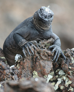
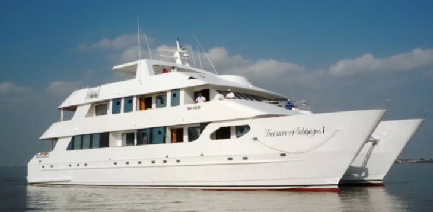

Galapagos Tours
Chacay's Galapagos offerings include three highly customized travel packages, sustainable volunteer opportunities and an irregularly discounted price! Chacay includes the $100.00 Galapagos National Park entrance fee AND the roughly $450 flight fee into its price. Other companies do not do this, so keep this in mind when looking at our prices!
Three Galapagos Tour Options:
Nestle into your home-on-the-water on a world class yacht. You have a choice of 3 classes of yachts (our recommendation, the 16 passenger catamaran), but all offer 3 meals, private baths, air conditioning and hot showers.
Island Hop – Hop – Hopping will introduce you to up to 7 islands in the Galapagos chain. You'll want to select island hopping if you have a more limited budget. A sample 8 Day Island Hopping adventure is described below.
Focus on Diving! You've come to the best place in the world to dive! Destinations include the renowned northern islands of Wolf and Darwin, both famous for their schools of hammerhead sharks, giant manta rays and whale sharks. And in between dives, you'll walk the shores amid volcanic rocks dotted with rare plants, seabirds, and reptiles.

However, no matter how you decide to visit the Galapagos, your package will include the option of meeting and working with local residents on projects related to social work, environmental responsibility and community development.
Itineraries:
You can choose the duration you prefer, and we'll ensure the most customized, professional and rewarding experience possible for that timeframe. We recommend a trip of at least 4 days, with a preference (of course) for a week. The following itineraries are examples and are highly customizable to your preferences.
Motor Catamaran Treasure of Galapagos
General Description of Motor Catamaran Treasure of Galapagos
The Catamaran Treasure of Galapagos (2009) has been built exclusively for cruises in the Archipelago of Galapagos. With 9 cabins, 1 suite and 8 double cabins, there is enough space for up to 16 guests, who can enjoy the first class comfort of this Catamaran. All cabins are equipped with a balcony, private bathroom and air conditioning. Furthermore this ship offers lounges, 4 different sun decks, a TV and DVD area, a comfortable dining room, two bars and a Jacuzzi. The boat's quality and size ensures smoother sailing, allowing for a quiet and relaxing cruise around the islands.
Technical Specifications of Motor Catamaran Treasure of Galapagos
Category: Luxury Class
Type: Motor Yacht
Length: 102 ft / 31 m
Speed: 12 knots
Cabins: 8 double cabins and 1 suite
Crew: 9 + 1 naturalist guide III
Year of construction: 2009
Itinerary Overview of Motor Catamaran Treasure of Galapagos
Day 1: Friday: Baltra / Santa Cruz (Charles Darwin Research Station)
Day 2: Saturday: North Seymour / Bartolome (the most photographed island, where the Gulf and Humboldt Pacific currents converge!)
Day 3: Sunday: South Plazas / Santa Fe
Day 4: Monday: San Cristobal (Interpretation Centre or Lobos Island - Cerro Colorado)
Day 5: Tuesday: Española (Suarez Point - Gardner Bay)
Day 6: Wednesday: Floreana (Cormorant Point - Devil's Crown - Post Office Bay)
Day 7: Thursday: Isabela (Volcano Chico - Tintoreras)
Day 8: Friday: Santa Cruz (Highlands) / Baltra
Island Hopping Itinerary
Day 1: SAN CRISTOBAL
Interpretation Center, Tijeretas Hill, Wreck Bay
Day 2: HIGHLANDS / SNORKELLING
Galapaguera "Cerro Colorado" Mountain Bike, El Junco lagoon, Lobos Island, Kicker Rock
Day 3: FLOREANA
Chiva ride to Highlands, Trekking Pirates Caves, Birdwatching, Black sand beach, Snorkelling
Day 4: ISABELA
Sierra Negra Vulcano Horseback riding, Chico vulcano, Beach games (frisbee-voleyball- soccer) or relax
Day 5: TREKKING/SNORKELLING
Wetlands, Wall of tears, Tintoreras Trail, Snorkel at Lobería Chica
Day 6: SANTA CRUZ
Charles Darwin Station
Tortuga Bay Sea Kayaking, Rancho Las Primicias, Lava tunnel
DAY 7, NORTH SEYMOUR
Trekking, Snorkelling, Bachas beaches
DAY 8
LOS GEMELOS crater, Baltra airport for return to Quito
INCLUDES:
Complete meals, Accommodation (private bathrooms – air conditioner – hot shower)
Bilingual naturalist guide, Transportation, Horseback riding, Biking, Kayaking, Snorkel equipment, Dry photo (camera waterproof bag)